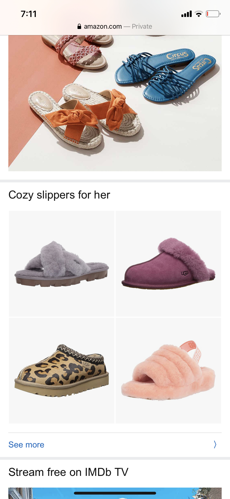

White Space:
Amazon
https://amazon.com/ - Amazon does a great job by showing people how to utlizie their
Rule of Thirds:

- This website shows proximity. Because the items are grouped together in an organized way, and they are close to one another, we consider them all part of one group. If they were spread out evenly, we wouldn't know where one stopped and the next started.
Proximity:
National Geographic
https://nationalgeographic.com
- This shows proximity really well because the "Today's Picks" articles are all grouped close together showing their relation with one another. I wish I could show above the articles as well because National Geographic has another section called "Latest Stories" that allows users to quickly choose different articles.